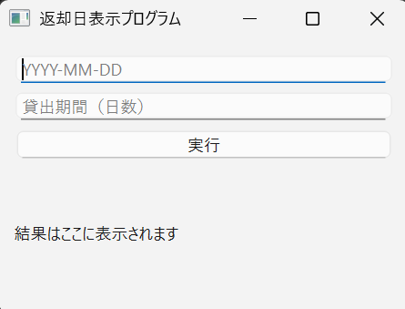
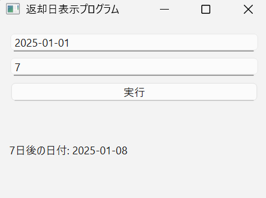
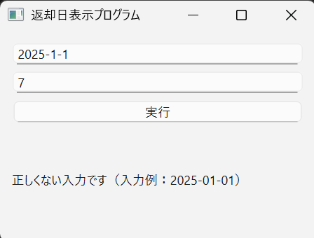

Portfolio
プロフィール
大阪公立大学工業高等専門学校2年生
成果物
-
クモイトダッシュ！
-
スペースキーを連打し、蜘蛛の糸を上っていくゲームです。芥川龍之介の「蜘蛛の糸」をモチーフにしています。プレイヤーはカンダタとなり、自分の後から糸をのぼってくる亡者のことは放っておいて、とにかく速く血の池地獄から脱出して、糸の先にある極楽へと向かうことを目指します。一定時間内に指定回数以上の連打を行うことでゲームクリア、連打の回数が指定回数に満たなかった場合にゲームオーバーになります。現在、ゲームクリアとゲームオーバーの画面が終了の後そのままになっており、結果が分かりにくくなってしまっているため、近日中にクリア画面のイラストを新たに追加し、ゲームオーバー後の画面を変更する予定です。（2025年1月制作）
-
-

-
図書館返却日計算プログラム
-
図書館の返却日を計算してくれるプログラムです。本を借りてきた日の西暦、月、日とその図書館の貸出期間を入力すると返却日を表示します(貸出日の月と日付が一桁の場合、二桁目は0で埋めてください)。利用する図書館によって返却日が異なると思ったため、一日ごとに貸出期間を変更できるようにしています。図書館以外にもDVDやCDなどのレンタル期間の計算にも利用できるようになっています。製作期間：2025年2月 製作時間：約6時間
-



プログラミング言語使用経験
- Python言語 …学校授業レベル
- Aruduino言語 …学校授業レベル
- Scratch …簡単なゲームを作ることができるレベル